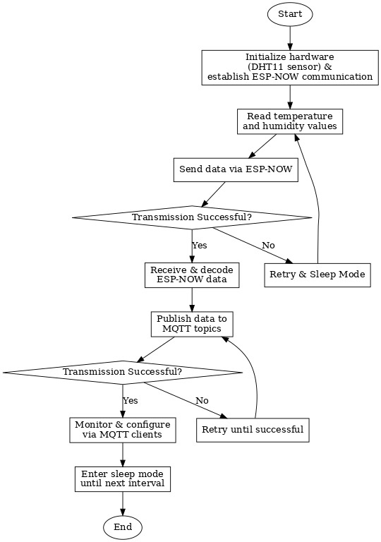
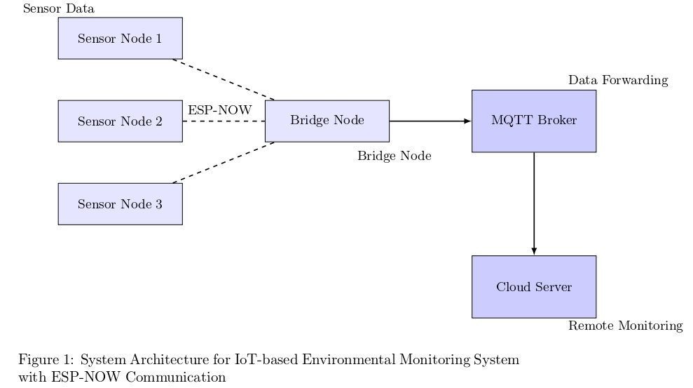
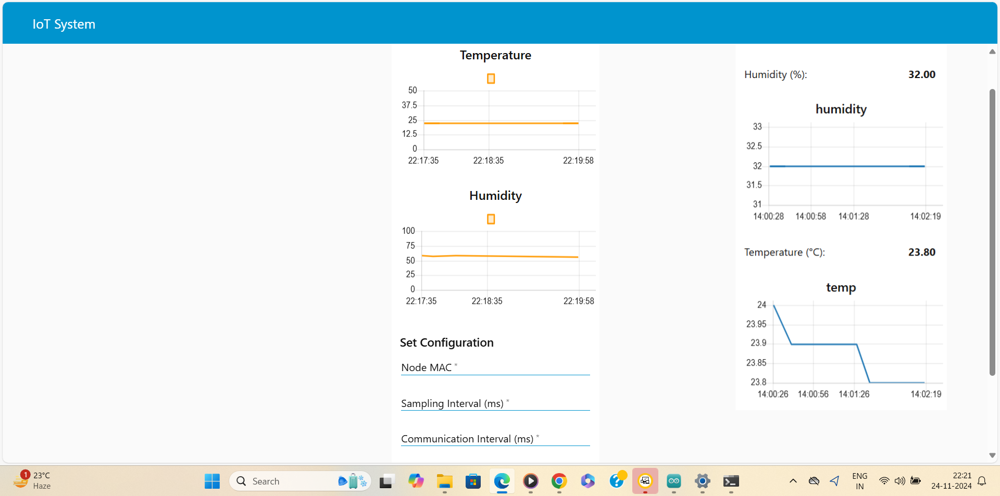

Explore Our Project on GitHub
Visit our GitHub repository to see the source code, project documentation, and more!
Visit GitHub Repository
Overview
The objective of this project is to design a wireless sensor network (WSN) system that is energy-efficient and scalable using ESP32 boards and IoT protocols. The system is ideal for monitoring environmental parameters like temperature and humidity in real-time, providing solutions to common issues faced in industrial and domestic settings.
Problem Statement:
In industrial and domestic settings, real-time monitoring and control of environmental parameters such as temperature and humidity are crucial for maintaining optimal conditions and ensuring safety. However, traditional monitoring systems often lack flexibility, real-time configurability, and effective communication protocols. This results in inefficiencies in data collection, delayed responses to alerts, and challenges in managing large-scale distributed systems.
Proposed Solution:
To address these challenges, the project integrates ESP-NOW for low-latency communication between nodes, MQTT for reliable remote monitoring, and DHT sensors for temperature and humidity data acquisition. The system is designed to:
- Seamless Communication: Facilitate low-latency communication between multiple sensor nodes and a central bridge using ESP-NOW.
- Remote Configurability: Provide dynamic configuration through MQTT to adjust thresholds and intervals without manual intervention.
- Real-Time Data Acquisition and Alerts: Continuously monitor temperature and humidity, triggering alerts based on threshold breaches.
- Energy Efficiency: Implement duty cycle management and deep sleep modes for battery-powered nodes, optimizing energy consumption.
The key focus areas are:
- Energy Efficiency: Low power consumption for long-lasting battery life in remote areas.
- Data Accuracy: Ensuring the reliability and accuracy of the environmental data collected.
- Scalability: The system should be easily expandable with more nodes for larger areas.
- Data Transmission: Fast and reliable data transmission through ESP-NOW and MQTT protocols.
System Architecture
The system architecture consists of multiple sensor nodes, a central bridge node, and a cloud-based server or MQTT broker. The architecture is designed to enable efficient and reliable environmental monitoring with real-time data collection and alerting capabilities.
System Process Flow: Below is the flowchart that illustrates the step-by-step process of how the system operates, from data collection by sensor nodes to cloud-based monitoring:

The flowchart visually depicts how data flows from sensor nodes to the bridge node and eventually to the MQTT broker for remote monitoring.
Sensor Nodes: Each sensor node is equipped with a DHT sensor (such as DHT11 or DHT22) to collect environmental data, specifically temperature and humidity. These sensor nodes are based on the ESP32 microcontroller and communicate with each other using the ESP-NOW protocol, which allows low-latency, peer-to-peer communication without the need for a traditional Wi-Fi network. The sensor nodes read data at predefined intervals and transmit the data to the bridge node. Additionally, the nodes are designed to optimize power consumption by utilizing deep sleep modes during idle periods, ensuring long-lasting battery life.
Bridge Node: The bridge node acts as an intermediary between the sensor nodes and the cloud server or MQTT broker. It receives data from multiple sensor nodes via ESP-NOW, processes the data, and forwards it to the cloud using the MQTT protocol. This ensures that the collected environmental data is made available for remote monitoring, visualization, and alerting. The bridge node is also responsible for managing the communication between the sensor nodes and ensuring that the data is transmitted reliably. It also performs some basic data validation to ensure the integrity of the transmitted information.
Central Server / MQTT Broker: The MQTT broker, hosted on a cloud platform or local server, is responsible for receiving and storing the data from the bridge node. It provides a communication hub for the sensor nodes and the bridge node. Using the MQTT protocol ensures that data is transmitted efficiently and securely. The central server monitors the incoming data for any irregularities or thresholds that exceed predefined limits. If an anomaly is detected (e.g., temperature or humidity levels that fall outside acceptable ranges), it triggers alerts, which can be sent to remote users or integrated with other systems for further action.
This architecture is scalable, meaning additional sensor nodes can be added easily to expand coverage over larger areas. The system also supports flexible remote configuration through MQTT, allowing users to adjust the thresholds and polling intervals without needing direct physical access to the nodes.

Hardware Design
The hardware design of the wireless sensor network (WSN) system involves key components to monitor environmental parameters, such as temperature and humidity, in real time. Below is a description of each component and their roles in the system:
Key Components:
- ESP32 Microcontroller: The ESP32 serves as the central hub for the sensor nodes. It features built-in Wi-Fi, Bluetooth, and ESP-NOW communication capabilities. The ESP32 is chosen for its low power consumption and flexibility in sensor integration.
- DHT11/DHT22 Sensors (Temperature and Humidity): These sensors are used to measure temperature and humidity in the environment. The data is then transmitted to the ESP32 microcontroller for processing and transmission.
- Power Supply: The system is designed to operate on low power to ensure long-lasting battery life, especially in remote areas. A rechargeable lithium-ion battery or similar power source can be used, with solar panels for recharging where necessary.
- ESP-NOW Communication Protocol: The ESP32 microcontrollers communicate with each other using the ESP-NOW protocol, allowing low-latency, peer-to-peer data transfer without requiring Wi-Fi infrastructure.
- MQTT Protocol: The central server or MQTT broker collects data from the sensor nodes. MQTT is a lightweight messaging protocol ideal for IoT applications, ensuring efficient data transfer with minimal bandwidth usage.
- PCB (Printed Circuit Board) Design: A custom PCB integrates all components for efficient operation and energy management. The PCB includes voltage regulation circuits, GPIO pin connections for sensors, and capacitors for stable power.
- Energy Management: The design incorporates deep sleep modes and duty cycling to minimize power consumption, allowing for long-term, low-energy operation of sensor nodes.
Energy Efficiency and Power Optimization:
The system uses low-power techniques such as deep sleep mode and periodic duty cycling to ensure the longevity of the battery, making it suitable for remote deployments.
Software Implementation
The software implementation is divided into two main components: the sensor node code and the bridge node code. Each component plays a crucial role in collecting, transmitting, and receiving environmental data (such as temperature and humidity) across the system. Below is a detailed description of each part:
Sensor Node Code:
The sensor node code runs on the ESP32 microcontroller and is responsible for reading data from the environmental sensors (DHT11 or DHT22). The steps involved are:
- Sensor Data Collection: The sensor node is equipped with a DHT11 or DHT22 sensor to measure temperature and humidity. The code reads these values at defined intervals, typically every few seconds or minutes, depending on the system’s configuration.
- Data Processing: After reading the data from the sensor, the ESP32 processes the raw sensor values. This may involve basic error checking, like verifying the validity of the data (e.g., checking for extreme temperature or humidity readings).
- ESP-NOW Communication: The processed sensor data is then transmitted to a nearby bridge node using the ESP-NOW protocol. ESP-NOW is a low-latency, peer-to-peer communication protocol designed specifically for IoT applications, which helps in efficient data transmission between nodes without relying on a traditional Wi-Fi network.
- Sleep Mode: To conserve power, the sensor node is programmed to enter deep sleep mode between sensor readings, reducing energy consumption and extending battery life for long-term deployments.
Bridge Node Code:
The bridge node also runs on an ESP32 microcontroller. It acts as a relay station, collecting data from multiple sensor nodes and forwarding it to the central MQTT broker. The steps involved are:
- Data Reception: The bridge node receives data from multiple sensor nodes via the ESP-NOW protocol. It can handle multiple nodes simultaneously, acting as a central collector for sensor data.
- Data Forwarding: Once the bridge node receives the data, it packages the sensor readings into a format suitable for transmission over the MQTT protocol. The bridge node then forwards the data to the MQTT broker (either locally or in the cloud), where it can be accessed by the central monitoring system or dashboard.
- Error Handling: If the bridge node is unable to receive data or encounters issues with communication, it retries the transmission or alerts the system about the failure.
- Low Power Management: Like the sensor nodes, the bridge node also utilizes sleep modes to conserve power, especially in battery-operated setups.
Remote Configuration via MQTT:
Using MQTT, users can remotely configure the system. This includes:
- Threshold Adjustment: Users can remotely change the temperature and humidity thresholds for triggering alerts.
- Data Interval Adjustment: The frequency of sensor readings and data transmission intervals can be adjusted remotely to optimize performance based on user needs or network conditions.
Real-Time Data Monitoring:
Through the MQTT broker, real-time data from all sensor nodes is accessible via a central dashboard, where users can monitor temperature, humidity, and system health. The system provides live updates and allows users to track environmental parameters continuously.
Instructions on How to Apply and Use the System
This section provides step-by-step instructions on how to set up, configure, and use the wireless sensor network (WSN) system. The system is designed to be easy to deploy and use for real-time environmental monitoring.
1. Hardware Setup
Follow the steps below to set up the hardware components of the system:
- Step 1: Assemble the hardware components, including ESP32 boards, DHT sensors (for temperature and humidity), and necessary power supplies.
- Step 2: Connect the DHT sensors to the ESP32 boards, ensuring that the sensor's data pin is connected to the correct GPIO pin on the ESP32.
- Step 3: Power on the ESP32 boards and ensure they are connected to the network. If using battery-powered sensors, ensure they are in low power mode to extend battery life.
2. Software Setup
To begin using the system, the following software configurations need to be done:
- Step 1: Install the necessary software libraries for the ESP32 board, including the DHT sensor library and ESP-NOW/MQTT library for communication.
- Step 2: Download the provided source code for the sensor node and bridge node. Upload the respective code to the corresponding ESP32 devices using the Arduino IDE or PlatformIO.
- Step 3: Configure the MQTT broker settings in the source code to connect to your cloud platform or MQTT broker.
3. System Configuration
To configure the system for optimal performance, follow these steps:
- Step 1: Define the environmental parameters you want to monitor (e.g., temperature range, humidity levels) in the software configuration files.
- Step 2: Set the desired data transmission frequency and thresholds for triggering alerts (e.g., when temperature or humidity goes above/below certain limits).
- Step 3: Set up the communication between nodes. Each sensor node will communicate with the bridge node via ESP-NOW, and the bridge node will transmit data to the MQTT broker.
4. Monitoring and Alerts
Once the system is set up and running, the following monitoring options are available:
- Step 1: Access real-time data from the system by connecting to the MQTT broker via a monitoring interface or application (e.g., a mobile app, web dashboard).
- Step 2: Receive alerts when the environmental parameters exceed the predefined thresholds. Alerts can be sent via email, SMS, or app notifications depending on your setup.
- Step 3: Review historical data to monitor trends in temperature and humidity over time.
5. Troubleshooting
If you encounter any issues while setting up or using the system, consider the following troubleshooting steps:
- Check the wiring and ensure that the sensors are properly connected to the ESP32 boards.
- Ensure the devices are correctly powered and that the Wi-Fi network is stable.
- If data transmission fails, verify that the ESP-NOW and MQTT configurations are correct, and check the connection to the MQTT broker.
- Refer to the system logs for any error messages and consult the troubleshooting guide provided with the system documentation.
6. System Updates
Periodically, system software updates might be released to improve performance or add new features. To update your system:
- Step 1: Download the latest version of the source code from the project repository.
- Step 2: Upload the updated code to the ESP32 boards.
- Step 3: Restart the system and verify that it is functioning with the new updates.
Results and Testing
The system undergoes several types of testing to ensure reliability, accuracy, and performance. These tests include unit testing, integration testing, and system performance testing. Below is a description of each type of testing:
Unit Testing:
Unit testing involves testing individual components or units of the system in isolation to verify their correct functionality. For this project, unit tests were performed on the following components:
- Sensor Reading: Each sensor (DHT11/DHT22) was tested independently to ensure it correctly reads the environmental data, including temperature and humidity.
- ESP32 Communication: The ESP32 microcontroller was tested to ensure that it successfully transmits data using the ESP-NOW protocol and receives data correctly from other nodes.
- Power Management: The power consumption and deep sleep functionality were tested to ensure that the nodes could function on low power for extended periods, simulating real-world deployment conditions.
Integration Testing:
Integration testing ensures that different components of the system work together as expected. This phase involves testing the interaction between the sensor nodes, bridge node, and central MQTT broker. Key integration tests included:
- Sensor Node to Bridge Node Communication: The sensor nodes were tested for their ability to send data to the bridge node using the ESP-NOW protocol. This includes verifying data integrity and ensuring that the bridge node can handle data from multiple sensor nodes.
- Bridge Node to MQTT Broker Communication: The bridge node was tested to ensure that it can forward the collected data from the sensor nodes to the MQTT broker correctly. Data sent from multiple sensor nodes was checked for accuracy and proper formatting.
- Real-time Data Display: Integration tests verified that the data displayed on the cloud-based MQTT dashboard or monitoring system accurately reflects the real-time values sent from the sensor nodes.
System Performance Testing:
System performance testing focuses on the overall system's behavior under different conditions. The main objective is to ensure the system performs efficiently, is scalable, and meets the required performance criteria. Key performance tests included:
- Scalability Testing: The system was tested with varying numbers of sensor nodes to determine how well it scales. The performance of the system was monitored with increasing node counts to identify any slowdowns or issues with data transmission and handling.
- Latency Testing: The latency between data collection at the sensor node and display on the MQTT dashboard was measured. This test ensured that the system provides real-time data monitoring without noticeable delays.
- Energy Consumption Testing: Performance was evaluated in terms of energy usage. This testing ensured that the nodes in deep sleep mode and periodic duty cycling maintained low power consumption, providing long-term operational efficiency.
- Load Testing: The system's ability to handle high-frequency data updates and large amounts of sensor data was tested to simulate a heavy load scenario. This helped identify any bottlenecks in the data transmission or processing.
Sensor Data and Communication Output
The IoT system is designed to monitor environmental parameters such as temperature and humidity. Below are some results:
- Sensor Node 1 measured temperature: 22.5°C, Humidity: 60%
- Sensor Node 2 measured temperature: 28.0°C, Humidity: 58%
- Sensor Node 3 triggered an alert for high temperature: 32.5°C
- The system successfully registered new nodes and communicated data to the bridge node via ESP-NOW.
- The data was forwarded to the MQTT broker for remote monitoring, and alerts were sent if the temperature exceeded the threshold.
Below is an image that illustrates the system's communication and data flow:

Reflection: Problems Encountered; Solutions Adopted
Throughout the development of this IoT system, several challenges were encountered. Below is a summary of the main problems faced and the solutions implemented to overcome them:
1. Problem: Data Loss Between Sensor Nodes and Bridge Node
Issue: One of the main challenges was data loss during communication between the sensor nodes and the bridge node, especially when there were multiple sensor nodes trying to send data simultaneously.
Solution: To address this, the ESP-NOW communication protocol was optimized to handle multiple data packets more efficiently. We implemented a retry mechanism for data transmission and ensured proper error handling in case of communication failures. Additionally, the communication frequency was reduced to prevent congestion on the wireless network.
2. Problem: High Power Consumption in Sensor Nodes
Issue: The sensor nodes initially consumed more power than expected, which could lead to reduced battery life, especially in outdoor deployments where charging options are limited.
Solution: We adopted a deep sleep mechanism for the ESP32 microcontroller and optimized the duty cycle. The nodes were programmed to go into deep sleep mode between data readings to conserve energy. A more efficient power management strategy was developed to ensure that the system operated for extended periods on a single charge.
3. Problem: Latency in Data Transfer to the MQTT Broker
Issue: During initial testing, there was noticeable latency in data transmission between the bridge node and the MQTT broker. This delay was particularly evident when sending real-time sensor data.
Solution: To reduce the latency, the system architecture was optimized by fine-tuning the communication intervals between the bridge node and the MQTT broker. Additionally, the MQTT broker was configured for better message queuing and prioritization, ensuring faster message delivery.
4. Problem: Limited Range of ESP-NOW Communication
Issue: The communication range of the ESP-NOW protocol was initially limited, causing communication failures between sensor nodes and the bridge node when the nodes were placed far apart.
Solution: To extend the communication range, we placed the bridge node in a more central location within the deployment area and used external antennas for better signal reception. In cases where the range was still insufficient, additional repeater nodes were used to extend the network coverage.
5. Problem: System Scalability Issues with Increasing Nodes
Issue: As more sensor nodes were added to the system, there was a noticeable decrease in performance, including slower data processing and transmission delays.
Solution: Scalability was addressed by implementing a more efficient data-handling strategy on the bridge node. The system was also designed to support a hierarchical node structure, where nodes could forward data to intermediate nodes before reaching the bridge node. This significantly improved scalability and performance with multiple nodes in the system.
6. Problem: MQTT Broker Overload with Large Amounts of Data
Issue: The MQTT broker faced overload issues when handling large volumes of sensor data coming from multiple nodes. This caused delays in data processing and message delivery.
Solution: To alleviate this, the system was designed to send aggregated data from the sensor nodes at regular intervals instead of sending raw data continuously. The MQTT broker was also scaled horizontally to ensure better load distribution and improved data processing capabilities.
Lessons Learned:
- Proper error handling and data integrity checks are essential to ensure reliable communication between nodes.
- Energy-efficient designs are crucial for long-term operation, especially in remote or off-grid environments.
- Optimization of system performance and latency is key to real-time monitoring in IoT systems.
- Scalability must be considered from the beginning to ensure that the system can handle an increasing number of devices efficiently.
These challenges provided valuable insights into the complexities of developing an IoT system and have helped refine the approach to solving these issues. The solutions adopted not only resolved the immediate problems but also contributed to the overall robustness and reliability of the system.
Energy Efficiency Analysis
- Duty Cycle: 0.26% (Minimal active time ensures low energy consumption).
- Average Current Consumption: 0.468 mA (Optimal for long-lasting battery life).
- Battery Life: Estimated to last around 133 days on a 1500mAh battery.
Battery Optimization Strategy: Deep sleep mode is implemented during idle periods to reduce power usage.
Challenges and Mitigations
- Wireless Communication Range: Mitigation: Using ESP-NOW with retransmission to ensure data delivery.
- Power Consumption: Mitigation: Using deep sleep modes and optimizing sensor power consumption.
- Network Scalability: Mitigation: Implementing a mesh network for better scalability.
Conclusion
This IoT-based wireless sensor network successfully monitors environmental conditions while optimizing for energy efficiency. The system is scalable, reliable, and suitable for long-term deployment in remote areas. Future work will focus on improving the communication range and adding additional sensors for more comprehensive monitoring.